10.1 Overview
Layer 10 provides the compute, storage and network on which everything runs; Layer 11 delivers changes to it safely. The diagram shows infrastructure as four columns (cloud or on-premises, compute, storage, networking) and the pipeline as a sequence: source control → CI (build and test) → CD (deploy) → IaC (Terraform) → monitoring and rollback → automated scaling, across development, staging and production environments.
Agentic workloads have specific infrastructure characteristics: runs are long (seconds to minutes), bursty, I/O-bound on model and tool calls, and sometimes GPU-bound (self-hosted models). The design that fits is a queue-backed worker pool on Kubernetes with separate node pools for CPU services, GPU inference and sandboxes.
10.2 Layer 10: Infrastructure
10.2.1 Cloud and on-premises
| Concern | AWS | Azure | GCP | On-premises |
|---|---|---|---|---|
| Kubernetes | EKS | AKS | GKE | OpenShift, Rancher, kubeadm |
| Relational DB | RDS / Aurora PostgreSQL | Azure Database for PostgreSQL | Cloud SQL / AlloyDB | PostgreSQL (Patroni) |
| Cache | ElastiCache Redis | Azure Cache for Redis | Memorystore | Redis / Valkey cluster |
| Vector DB | pgvector on RDS, OpenSearch, Pinecone | pgvector, Azure AI Search | pgvector, Vertex Vector Search | Milvus, Qdrant, Weaviate |
| Object storage | S3 | Blob Storage | Cloud Storage | MinIO, Ceph |
| Queue | SQS, MSK (Kafka) | Service Bus, Event Hubs | Pub/Sub | Kafka, RabbitMQ |
| Secrets / keys | Secrets Manager, KMS | Key Vault | Secret Manager, Cloud KMS | Vault |
| Models | Bedrock, SageMaker | Azure OpenAI, Azure AI Foundry | Vertex AI | vLLM on GPU nodes |
| Identity | Cognito, IAM Identity Center | Entra ID | Cloud Identity | Keycloak, AD FS |
| Observability | CloudWatch, X-Ray, AMP/AMG | Azure Monitor | Cloud Operations | Prometheus, Grafana, Tempo, Loki |
Hybrid is common: proprietary models via cloud APIs, sensitive workloads on in-VPC or on-premises open models, routed by data classification at the gateway.
10.2.2 Compute
- Kubernetes hosts all long-running services: API, agent workers, gateway, guardrails, MCP servers, OTel collector, self-hosted models. Node pools: general CPU (services), memory-optimised (vector/graph if self-hosted), GPU (inference), isolated (sandboxes with gVisor/Kata RuntimeClass).
- Containers for every service, built from minimal base images, non-root, read-only filesystem, signed.
- Serverless (Lambda, Cloud Run, Azure Functions) fits event-driven pieces: ingestion triggers, webhooks, scheduled purges, low-volume MCP tools. It fits agent runs poorly (duration limits, cold starts, no GPU).
10.2.3 Storage
- Object storage for documents, uploads, artefacts, model weights, backups and audit logs (with Object Lock/WORM).
- Block storage for stateful services that must run in-cluster (self-hosted vector or graph DBs) with snapshots.
- Databases: managed PostgreSQL (multi-AZ, PITR backups, read replicas), managed Redis (cluster mode, persistence for session durability), vector store per the memory chapter, Neo4j (AuraDB or self-hosted).
10.2.4 Networking
- VPC / VNet with public subnets (load balancer only), private subnets (services), data subnets (databases); NAT with egress allow-lists.
- CDN (CloudFront, Front Door, Cloud CDN) for the frontend and downloaded artefacts, with WAF rules.
- Load balancer (ALB/NLB, Application Gateway) terminating TLS, routing to the ingress controller; idle timeouts sized for streaming.
- Firewall / security groups: least-privilege between tiers; private endpoints to managed services.
- Service mesh (optional): mTLS, retries, traffic shifting for canaries.
10.2.5 Recommended cloud architecture

Mermaid source diagrams/deployment-architecture.mmd
flowchart TB
USER[Users] --> CDN[CDN + WAF]
CDN --> ALB[Load balancer / API Gateway]
subgraph VPC["VPC"]
subgraph PUB["Public subnets"]
ALB
end
subgraph PRIV["Private subnets · Kubernetes cluster"]
FE[Frontend pods<br/>Next.js]
API[API pods<br/>FastAPI]
RT[Agent runtime pods<br/>LangGraph workers]
GWP[LLM gateway pods<br/>LiteLLM]
GR[Guardrail service]
MCPS[MCP tool servers]
SBX[Sandbox pool<br/>gVisor / Firecracker]
OTEL[OTel collector]
end
subgraph DATA["Data subnets"]
PG[(PostgreSQL<br/>RDS)]
RD[(Redis<br/>ElastiCache)]
VDB[(Vector DB)]
KG[(Neo4j)]
MQ[[Message queue<br/>SQS / Kafka]]
end
S3[(Object storage)]
KMS[KMS + Secrets Manager]
end
ALB --> FE --> API
API --> RT
RT --> GR
RT --> GWP
RT --> MCPS
RT --> SBX
RT --> MQ --> RT
RT --> PG & RD & VDB & KG & S3
GWP --> EXT[External model providers]
GWP --> VLLM[GPU node pool<br/>vLLM]
OTEL --> MON[Grafana · LangSmith · Phoenix]
API -.-> KMS
GWP -.-> KMS
Text form of the production path:
User
│ HTTPS
CDN + WAF
│
Load balancer / API gateway (TLS, auth offload, coarse rate limits)
│
FastAPI backend (request handling, input guardrails, enqueue run, SSE events)
│ queue (SQS / Kafka)
Agent runtime workers (LangGraph; checkpoints in PostgreSQL)
├─ Guardrail service ├─ MCP tool servers
├─ Sandbox pool (microVMs) ├─ Memory: Redis · PostgreSQL/pgvector · Neo4j · S3
└─ LLM gateway (LiteLLM) ── external providers / in-cluster vLLM on GPU nodes
│
Observability (OTel collector → Prometheus, Tempo/LangSmith, Loki, Grafana)
Sizing starting point for ~1,000 concurrent users: 3 API replicas, 10–30 worker replicas (each handling ~10 concurrent runs asynchronously), 2 gateway replicas, 2 guardrail replicas, PostgreSQL with 4–8 vCPU and a read replica, Redis 6 GB cluster, 1–4 GPU nodes if self-hosting an 8B model. Scale from measurements, not from guesses.
10.3 Layer 11: DevOps and delivery pipeline

Mermaid source diagrams/cicd-pipeline.mmd
flowchart LR
C[Code commit<br/>Git] --> B[Build<br/>lint · type-check]
B --> T[Tests<br/>unit · agent evals · RAGAS]
T --> S[Security scan<br/>SAST · deps · secrets · prompt tests]
S --> CB[Container build<br/>signed image]
CB --> IaC[Terraform plan/apply]
IaC --> DEV[Dev]
DEV --> STG[Staging<br/>shadow evals]
STG --> CAN[Canary 5%]
CAN -->|SLO ok| PROD[Production<br/>blue-green]
CAN -->|regression| RB[Automatic rollback]
PROD --> MON[Monitoring & evaluation]
MON --> FB[Feedback<br/>datasets · prompt updates]
FB --> C
10.3.1 Pipeline stages
- Code commit. Git with trunk-based development or short-lived branches; prompts, policies, agent configuration, IaC and evaluation datasets are all in the repository.
- Build. Lint, type-check, dependency resolution with lockfiles.
- Testing. Unit tests (graph logic with recorded model responses), contract tests for tools and MCP servers, integration tests against ephemeral databases, agent evaluations (offline suites: task success, tool-call accuracy, RAGAS) with regression thresholds.
- Security scan. SAST (Semgrep, CodeQL), dependency scanning (Trivy, Snyk), secret scanning (gitleaks), IaC scanning (Checkov), container image scanning, and the adversarial prompt suite against guardrails.
- Container build. Multi-stage Dockerfiles, SBOM generation, image signing (cosign), push to a private registry with immutable tags.
- Deployment. GitOps (Argo CD or Flux) reconciles Helm charts/Kustomize from Git; Terraform applies infrastructure changes with plan review.
- Monitoring and rollback. Post-deploy checks: SLO probes, evaluation scores on canary traffic, cost per run; automatic rollback on regression (Argo Rollouts analysis templates).
- Feedback. Production failures become evaluation cases; human corrections become datasets; prompt and policy updates start the loop again.
10.3.2 Environments
Development (shared, cheap models, synthetic data), staging (production-like, shadow evaluation against production traffic samples, real providers with separate keys and budgets), production (canary then full). Model and prompt versions are promoted through environments like code.
10.3.3 Deployment strategies
- Blue-green: two full environments; switch the load balancer; instant rollback. Use for the API and gateway.
- Canary: route 5 → 25 → 100 % of traffic to the new version with automated analysis (error rate, latency, evaluation scores, cost). Use for agent workers, prompts and models.
- Shadow: run the candidate on copied traffic without serving results. Use for new models and major prompt changes.
10.3.4 Tooling
| Function | Tools |
|---|---|
| CI | GitHub Actions, GitLab CI, Jenkins, Buildkite |
| CD / GitOps | Argo CD, Flux, Argo Rollouts, Spinnaker |
| IaC | Terraform / OpenTofu, Pulumi, CloudFormation, Bicep |
| Packaging | Docker, Helm, Kustomize |
| Scanning | Semgrep, CodeQL, Trivy, Snyk, gitleaks, Checkov |
| Evaluation in CI | promptfoo, DeepEval, RAGAS, LangSmith evaluators |
| Autoscaling | HPA, KEDA (queue-depth scaling), Cluster Autoscaler / Karpenter |
10.4 Performance engineering
Latency and cost are the two constraints users and finance notice first.
- Response caching: exact and provider prompt caching at the gateway; short-TTL caches for read tools; embedding cache for repeated queries.
- Streaming responses: stream plan and step events immediately, stream final tokens; perceived latency drops even when total time does not.
- Parallel agents: execute independent tasks in the plan DAG concurrently with a per-run cap; parallel tool calls within a step when the model emits several.
- Async execution: fully asynchronous workers (
asyncio,httpx), one worker process handling many runs; never block on I/O. - Model routing: small models for simple steps; the reflection step only when the deliverable warrants it.
- Token optimisation: compact tool schemas, summarised observations, budgeted context, structured outputs instead of verbose prose between agents.
- Batch processing: offline ingestion, evaluation and reporting through provider batch APIs and scheduled jobs.
- Connection management: keep-alive pools to providers and databases; HTTP/2 where supported.
- Queue-based scaling: KEDA scales workers on queue depth; GPU pools scale on utilisation with warm minimums.
Measure before optimising: the trace waterfall shows whether time goes to the model, tools, guardrails or queueing.
10.5 Implementation guide
- Start with one cluster and three namespaces (
api,agents,data) and grow to cluster-per-environment. - Terraform modules per concern (network, cluster, data, observability); state in remote backends with locking.
- Helm chart per service with values per environment; secrets via External Secrets Operator.
- KEDA ScaledObject on the run queue for workers; HPA on CPU for API and gateway.
- PodDisruptionBudgets and graceful shutdown (finish in-flight runs or checkpoint and requeue) for workers.
- Backups: PostgreSQL PITR, Redis snapshots, object versioning; test restores quarterly.
10.6 Example implementation
Worker deployment with KEDA scaling:
apiVersion: apps/v1
kind: Deployment
metadata: { name: agent-worker, namespace: agents }
spec:
template:
spec:
serviceAccountName: agent-worker
securityContext: { runAsNonRoot: true, seccompProfile: { type: RuntimeDefault } }
containers:
- name: worker
image: registry.internal/agent-worker@sha256:...
env:
- { name: QUEUE_URL, valueFrom: { configMapKeyRef: { name: agents, key: queue_url } } }
- { name: MAX_CONCURRENT_RUNS, value: "10" }
resources: { requests: { cpu: "500m", memory: "1Gi" }, limits: { memory: "2Gi" } }
lifecycle: { preStop: { exec: { command: ["/bin/sh", "-c", "kill -TERM 1; sleep 60"] } } }
---
apiVersion: keda.sh/v1alpha1
kind: ScaledObject
metadata: { name: agent-worker, namespace: agents }
spec:
scaleTargetRef: { name: agent-worker }
minReplicaCount: 2
maxReplicaCount: 50
triggers:
- type: aws-sqs-queue
metadata: { queueURL: https://sqs.eu-west-1.amazonaws.com/123/agent-runs, queueLength: "20" }
Terraform module skeleton:
module "network" { source = "./modules/network" cidr = "10.40.0.0/16" azs = 3 }
module "cluster" { source = "./modules/eks" vpc_id = module.network.vpc_id
node_pools = { general = { instance = "m6i.xlarge", min = 3, max = 20 },
gpu = { instance = "g5.2xlarge", min = 1, max = 4, taint = "gpu" },
sandbox = { instance = "m6i.large", min = 2, max = 30, taint = "sandbox" } } }
module "data" { source = "./modules/data" vpc_id = module.network.vpc_id
postgres = { class = "db.r6g.xlarge", multi_az = true, pgvector = true }
redis = { node_type = "cache.r6g.large", replicas = 2 } }
module "observ" { source = "./modules/observability" cluster = module.cluster.name }
GitHub Actions evaluation gate:
- name: Agent evaluations
run: promptfoo eval -c evals/promptfoo.yaml --output evals/results.json
- name: Gate on regression
run: python scripts/eval_gate.py evals/results.json --min-task-success 0.85 --min-faithfulness 0.85
10.7 Best practices
- Common mistakes. Running agents inside the API process; no queue; long-lived credentials; latest tags; deploying prompt changes without evaluation; a single node pool for everything including sandboxes.
- Optimisation. Right-size workers by measuring concurrency; use spot/preemptible nodes for batch and evaluation; warm GPU replicas; regional proximity to providers.
- Security. Signed images, admission policies (Kyverno/Gatekeeper) enforcing non-root, no privileged pods, required NetworkPolicies; separate accounts/subscriptions per environment.